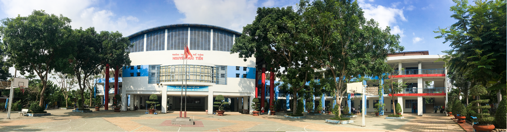

Giới thiệu về trường
Được đưa vào hoạt động từ năm học 2004-2005 cùng lúc với trường THPT Nguyễn Văn Cừ trong bối cảnh con em nhân dân Hóc Môn thiếu chỗ học khi chỉ mới có 3 trường: THPT Lý Thường Kiệt, Nguyễn Hữu Cầu và Bà Điểm.
Những năm học đầu tiên, do chưa có chỗ học nên Trường được xếp học tạm tại trường THCS Tam Đông 1 (cơ sở cũ). Năm sau, do tăng lớp, Trường được xếp học tạm thêm ở TTGDTX Hóc Môn nên công tác quản lý và việc dạy học gặp rất nhiều khó khăn. Đến năm học 2007-2008, trường mới được dọn về cơ sở mới tọa lạc tại số 9A ấp 7 xã Đông Thạnh để học cũng trong điều kiện học tạm vì chưa được bàn giao cơ sở
Năm học 2008-2009, Thầy Trần Minh Triết được Sở GD ĐT TP Hồ Chí Minh điều động về làm hiệu trưởng trường THPT Nguyễn Hữu Cầu và bổ nhiệm cô Đào Thị Kim Nhi về làm hiệu trưởng mới.
Cuối năm học 2008-2009, cơ sở vật chất của nhà trường được chính thức bàn giao gồm 36 phòng học khang trang, 1 hội trường có sức chứa 150 chỗ, 1 số phòng nhỏ bằng nửa phòng học.
Riêng các khu văn phòng, phòng thí nghiệm thực hành, phòng bộ môn, thư viện, thiết bị, nhà thi đấu, sân tập TDTT, nhà xe đều chưa có theo bản vẽ ( vì còn nhà dân trong đất quy hoạch)
Nhà trường đã tận dụng hết các điều kiện cơ sở vật chất được thụ hưởng để vừa dạy vừa tổ chức tất cả các hoạt động giáo dục toàn diện.
Về đội ngũ từ năm học 2008-2009, sau 4 năm hoàn thành nghĩa vụ dạy ở huyện ngoại thành, rất nhiều thầy cô khá vững chuyên môn đã xin chuyển về các trường nội thành nên nguồn giáo viên hụt về chất đáng kể.
Về chất lượng tuyển sinh từ 2004-2007, tuyển sinh đầu vào của trường luôn thấp nhất ở Huyện Hóc Môn. Từ năm 2008 – 2013, theo cơ chế xét tuyển đầu vào của học sinh cũng rất thấp, hầu hết học sinh THCS ở địa bàn Đông Thạnh, Nhị Bình, Một phần Thới Tam Thôn đều được vào học (có năm lên đến 99%).

Tuy vậy, tập thể Hội đồng sư phạm nhà trường đã nhất trí với phương châm: “Chất lượng giáo dục là uy tín của nhà trường” nên từ năm học 2008-2009 đã thực hiện tốt các cuộc vận động của Ngành giáo dục mặc dù điều kiện dạy học vẫn còn nhiều khó khăn.
Trước hết, nhà trường bắt tay vào xây dựng “Trường học thân thiện – Học sinh tích cực” bằng nhiều việc làm cụ thể, thiết thực: xin xây hàng rào để ngăn cách giữa nhà trường và nhà dân, tiếp tục trồng thêm và chăm sóc hệ thống cây xanh, sắp xếp lại chỗ làm việc, nội dung công việc cho từng bộ phận, xây dựng phong cách làm việc khoa học, xây dựng kế hoạch làm việc của Ban giám hiệu, các Đoàn thể…
Nhà trường bắt đầu chú trọng chất lượng và hiệu suất đào tạo sau khi tạm ổn về điều kiện làm việc. Năm học 2008-2009, trường tổ chức cho học sinh dự thi Olimpic 30/4 và có một huy chương đồng đầu tiên thật quý giá. ( em Nguyễn Thị Qúy và thầy hướng dẫn Lương Nguyễn Trãi). Thành tích nhỏ này đã tạo tư tin cho học trò dự thi các năm sau năm nào cũng tăng chất lượng giải.

Năm học 2013-2014 vừa qua các em đã đạt 6 huy chương Olimpic 30/4 và 9 giải học sinh giỏi cấp thành phố (trong đó có cả các môn Toán, Lý , Hóa mà các em và thầy cô phải nỗ lực mới có kết quả)
Thành tích thi TNTHPT của Trường luôn cao hơn tỉ lệ bình quân của Thành phố ( hơn 99%) . Năm 2013-2014, Trường đạt TNTHPT 100%
Tỉ lệ Học sinh đỗ đại học cũng ngày một tăng, Đến nay, tỉ lệ đỗ ĐH-CĐ đã hơn 50% (chỉ thống kê theo giấy trúng tuyển NV1 được gửi về trường)
Trong nhiều năm qua, lãnh đạo nhà trường tuy có thay đổi nhân sự nhưng nội bộ vẫn đoàn kết, nhất trí trong mọi công việc với sự phân công phân nhiệm rõ ràng, theo sở trường. Đặc biệt là việc xây dựng các đoàn thể vững mạnh luôn được chú trong. Chi bộ luôn là nơi định hướng tốt cho các hoạt động, Công đoàn và Đoàn thanh niên là các tập thể biến các chủ trương kế hoạch thành hành động và mang lại hiệu quả cho nhà trường.
Thế mạnh của nhà trường là tổ chức các hoạt động mang giá trị giáo dục truyền thống qua các sinh hoạt chủ đề, chủ điểm: Lễ đón học sinh khối 10, Lễ hội Tri ân thầy cô, các chương trình giao lưu tuyên dương gương sáng, trại truyền thống, tổ chức sinh nhật tuổi 18 cho học sinh khối 12, các hoạt động văn thể mỹ, công tác thiện nguyện, Học sử qua bảo tàng, khuyến học khuyến tài, …đặc biệt là lễ hội Tri ân Cha Mẹ Thầy Cô thật ý nghĩa dành cho học sinh cuối cấp.
Công tác phối hợp với địa phương, với cha mẹ học sinh, các mạnh thường quân luôn được nhà trường quan tâm. Nhờ vậy, nhiều năm qua, chính quyền địa phương các cấp, Ban đại diện cha mẹ học sinh đã cùng nhà trường đã phối hợp tốt trong công tác giáo dục học sinh, góp phần vào kết quả hoạt động của nhà trường.
10 năm qua, chặng đường chưa dài nhưng cũng đã đánh dấu 10 năm vượt khó của ngôi trường vùng ven thành phố. Ngày 09/9/2014, Sở GDĐT TPHCM đã tặng Bằng khen của Thủ tướng Chính phủ cho Trường THPT Nguyễn Hữu Tiến trong Hội nghị tổng kết năm học 2013-2014 về thành tích xuất sắc của nhà trường giai đoản 2011-2013 Đến nay, chuẩn bị bước vào năm học 2014-2015, trong điều kiện Trường vẫn chưa được mở rộng và hoàn thiện cơ sở vật chất, nhà trường vẫn sẽ tiếp tục vượt khó để thực hiện thật tốt Kế hoạch năm học tới và Kế hoạch chiến lược giai đoạn 2014-2019
Thay mặt toàn thể Hội đồng sư phạm, tôi xin chân thành cảm ơn Sở GDĐT TPHCM, Huyện ủy UBND Huyện Hóc Môn – xã Đông Thạnh, CBGVCNV từng công tác tại trường, Ban đại diện CMHS, các mạnh thường quân, các cựu học sinh… suốt 10 năm qua đã có những đóng góp quý báu để nhà trường chúng tôi đạt được những thành quả hôm nay.
Hiệu trưởng
Đào Thị Kim Nhi